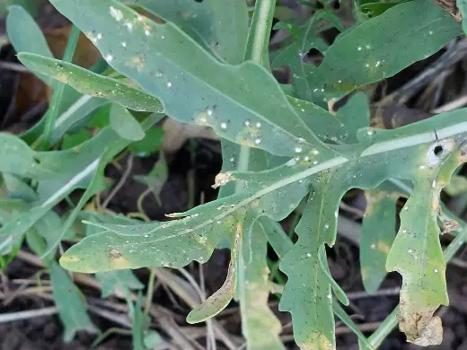

Wall rocket
Wall rocket is a wild green you can forage from April to October across the Netherlands. Wild rocket of walls, railways and dry waste ground with deeply lobed leaves and four-petalled yellow flowers.

When is wall rocket in season in the Netherlands?
Wall rocket is usually in season April to October. Timing shifts with weather, latitude and altitude.
Where does wall rocket grow in the Netherlands?
Wall rocket grows across the Netherlands. Regions: Coast, dunes and Wadden, West, East, South.
How do you recognise wall rocket?
Wild rocket of walls, railways and dry waste ground with deeply lobed leaves and four-petalled yellow flowers.
How do you harvest wall rocket?
Pinch off young tips and top leaves before the plant flowers, when they are tender and mild. Leave the roots and lower leaves so it regrows. Pick away from roads, sprayed verges and dog-walking paths.
How do you eat wall rocket?
Peppery leaves in salads and on pizza, exactly like shop-bought wild rocket.
How do you store wall rocket?
Best fresh.
What is wall rocket good for?
Vitamin C.